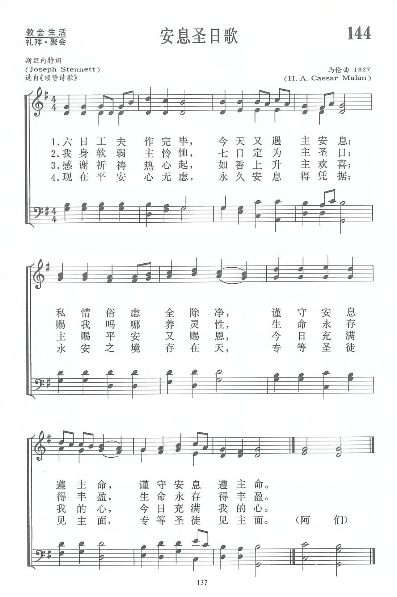
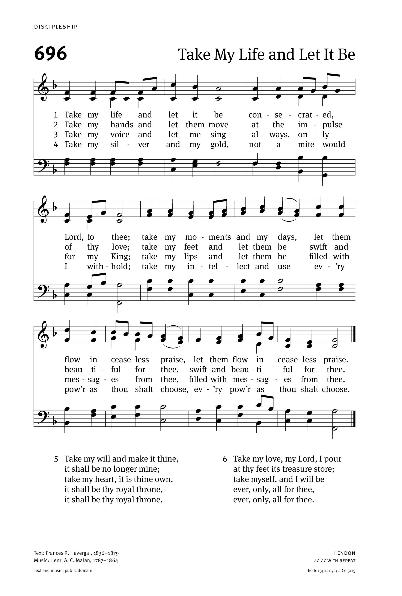
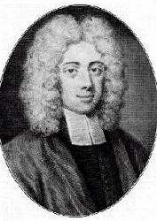

|
|
讚美詩(新編) |
|
1. Another six days’ work is done 2. Come, praise the Lord, whose love assigns 3. O that our thoughts and thanks may rise 4. A heavenly calm pervades the breast 5. With joy, great God, Thy works we view, 6. In holy duties let the day,
|
1.六日工夫作完畢，今天又遇主安息； |
|
https://www.zanmeishige.com/tab/13817.html?songbook=1&index=144

 |
|
|
|
|

144首 《安息圣日歌》 https://youtu.be/pmPbPbrXoAk -
Another Six Days’ Work Is Done - Historic Christian Hymn / Spiritual Song
Lyrics with Orchestral backing music.
https://youtu.be/zjG6Dq8ZvmI
| Text: | Another Six Days' Work Is Done |
| Author: | Joseph Stennett |
| Author (v. 2): | Anonymous |
| Tune: | RETREAT |
| Composer: | Thomas Hastings |
| Short Name: | Joseph Stennett |
| Full Name: | Stennett, Joseph, 1663-1713 |
| Birth Year: | 1663 |
| Death Year: | 1713 |
The author was a Baptist
preacher in London, from 1690, to his death in 1713.
--Annotations of the Hymnal, Charles Hutchins, M.A. 1872.
=============================
Stennett, Joseph,

the
earliest English Baptist hymnwriter whose hymns are now in common
use, was born at Abingdon, Berks, in 1663. He received a superior education
at the Grammar School of Wallingford, and at the age of 22 removed to
London, where for several years he engaged in tuition. In 1688 he married a
daughter of George Guill, a French Protestant refugee, another of whose
daughters was the wife of the celebrated Presbyterian minister, Dr. Daniel
Williams, who became a generous friend to Stennett. In the following year he
was called to preach by the Baptist Sabbatarian congregation then meeting in
Devonshire Square, London, afterwards in Pinners' Hall; and in 1690 became
its pastor, a position he retained to his death, July 4, 1713. Since the
meetings of this congregation for worship were on the seventh day of the
week, he was free to preach to other congregations on the Sunday, which he
did very frequently, especially to the General Baptist Church in the
Barbican. Such was Stennett's repute for piety, learning and practical
wisdom that his advice was very much sought by his Christian friends, and by
the "great Whig Lords” of that day he was occasionally consulted as to the
feeling of the Dissenters concerning national affairs. His published works
include:—
(1) Hymns in commemoration of the Sufferings of our Blessed
Saviour Jesus Christ, compos'd for the Celebration of his Holy Supper,
1697; 2nd ed. 1703 (This is entitled in Stennett's Works,
1732, Hymns for the Lord's Supper). These were 37 in
number, increased to 50 in the 3rd edition, 1709. (2) In 1700 he published a
poetical Version of Solomon's Song of Songs, together with
the XLVth Psalm. A second edition, corrected, appeared in 1709. (3) In
1712 he published twelve Hymns composed for the Celebration
of the Holy Ordinance of Baptism; 2nd ed. 1722.
Stennett also translated Dacier's Plato and other works from the French, and published several sermons preached on days of National Thanksgiving and other public occasions. His Works were collected after his death and published in 1732, in 4 vols. They contain a Memoir, Sermons and Letters, the Hymns and Poems mentioned above, and a few other poetical pieces. A controversial work, An Answer to Mr. Russen's Book on Baptism, 1702, may be reckoned as a 5th vol. Of his hymns, that which, in the form of varying centos, is most widely known is, "Another six days' work is done". Others in common use include:—
Notes
Another six
days' work is done. J. Stennett. [Sunday.] This poem
"On the Sabbath" appeared as one of his "Miscellany Poems," in his Works,
1732, vol. iv. pp. 231-234, in 14 stanzas of 4 lines. In its full form
it is unknown to any hymnal: but centos therefrom are in modern
collections, nearly all beginning with the first stanza as above:—
1. A cento in 6 stanzas in the Bristol Baptist Collection of
Ash and Evans, 1769, from whence it has passed through a series of
Baptist Hymnals to the Baptist Psalms and Hymns,
1858, No. 819, and other modern collections. It is composed of stanzas i.,
x., xi., xii., and xiii., with a stanza introduced as the second, "Come,
bless the Lord, whose love assigns," &c, the authorship of which has not
been traced. The cento, "Come, bless the Lord," &c, in Stowell's Selection,
1831-77, is compiled from the Baptist Psalms & Hymns text.
2. Another cento which was given in Williams and Boden's Collection,
1801, No. 451, and thence through various collections to the Leeds
Hymn Book, 1853, the New Congregational Hymn Book,
No. 753, and others. It is the above cento with the omission of the
original stanza xii., "With joy," &c.
3. A third cento, in Bickersteth's Christian Psalmody,
1833, No. 280, in 4 stanzas, being i., x., and xiii. of the original,
and the added stanza, "Come, bless the Lord," &c, as in No. i., is
sometimes repeated in modern collections.
4. A fourth is given in Harland's Church Psalter,
No. 22, Windle's Metrical Psalter, &c, No. 19, and
others. It is composed of Stennett’s stanzas i., x., xi., and xiii.
5. The last cento is repeated in the Islington Psalms &
Hymns, 1862, No. 357, with the omission of stanza xi. of the
original.
6. A sixth cento, beginning, "Again our weekly labours end," and
consisting of stanzas i., x., xi., and xiii. of Stennett, re-written for
Cotterill's Selection, 1810, No. 97, is given in
several collections, old and new.
7. The seventh cento begins, "Another week its course has run." It is a
slightly altered form of Stennett’s stanzas i., x., xi., and xiii., and
is included in the Harrow School Collection.
Most of these centos are in common use in America and other
English-speaking countries.
-- John Julian, Dictionary of Hymnology (1907)
| Short Name: | César Malan |
| Full Name: | Malan, César, 1787-1864 |
| Birth Year: | 1787 |
| Death Year: | 1864 |
Rv Henri Abraham Cesar Malan, 1787-1864.

Born in Geneva, Switzerland, into a bourgeois family that moved to Switzerland to escape religious persecution during the French Revolution, he attended the university in Marseilles, France, intending to become a businessman. Although having some grounding in religious faith by his mother, he decided to attend the Academy at Geneva (founded by Calvin) in preparation for ministry. He was ordained in 1810, after being appointed a college master (teaching Latin) in 1809. Malan was in accord with the National Church of Geneva as a Unitarian, but the Reveil Movement caused him to become a dissident (evangelical) instead of a proponent of the Reformed Church (believing works, not faith, was what mattered). In 1811 he married (wife’s name not found). They had at least two children (one son was Solomon, referenced below). From 1813 on Malan slowly became an evangelical, after being given an understanding of true salvation through grace (not works) in 1816 by two German Lutherans from Geneva. He became saved upon this realization and was so changed that he burned his prized collection of classical authors and manuscripts. In 1817 he preached around Geneva, and one sermon in particular, “Man only justified by faith alone” created a firestorm and brought him into conflict with religious authorities of the region. From then on he wished to help reform the national church from within, but the forces of the Venerable Company were too strong for him and excluded him from the pulpits and caused his dismissal from his regentsship at the college in 1818. Others in agreement with Malan were Charles Spurgeon, Robert Wilcox, Robert Haldane, and Henry Drummond. In 1820 he built a chapel in his garden and obtained the license of the State for it as a separatist place of worship. He preached in that chapel 43 years. In 1823 he was formally deprived of his status as a minister of the national Church. Various events caused his congregation to diminish over the next few years, and he began long tours of evangelization subsidized by religious friends in his land, Belgium, France, England and Scotland. He often preached to large congregations. Malan also authorized a hymn book, “Chants de Sion” (1841). A strong Calvinist, Malan lost no opportunity to evangelize. On one occasion an old man he visited pulled Malan’s hymnal out and told him he had prayed to see the author of it before he died. On a visit to England Malan also inspired author, Charlotte Elliott, to write the hymn lyrics for “Just as I am”, when seeking an answer to her conversion she asked and he advised her to come to Christ ‘just as she was’. Malan published a score of books and also produced many religious tracts and pamphlets largely on questions in dispute between the National and evangelical churches of Rome. He also wrote articles in the “Record” and in American reviews. His hymns were set to his own melodies. He was an artist, a mechanic, a carpenter, a metal forger, and a printer. He had his own workshop, forge and printing press. One of his greatest joys was the meeting of the evangelical alliance at Geneva in 1861 which helped change church views. He retired to his home, Vandoeuvres, in the countryside near Geneva in 1857, dying there seven years later.. He was honored by a visit from the Queen of Holland two years before his death. He is mainly remembered as a hymn writer, having written 1000+ hymn lyrics and tunes. One son, Solomon, a gifted linguist and theologian, became Vicar of Broadwindsor. About a dozen of his hymns appeared translated in the publication “Friendly visitor” (1826). He was an author, creator, composer, editor, correspondent, contributor, translator, owner, and performer.
John Perry
Notes
HENDON was composed by Henri A. Cesar Malan (b. Geneva, Switzerland, 1787; d. Vandoeuvres, Switzerland, 1864) and included in a series of his own hymn texts and tunes that he began to publish in France in 1823, and which ultimately became his great hymnal Chants de Sion (1841). HENDON is thought to date from 1827. Lowell Mason (PHH 96) brought the tune to North America and published it in his Carmina Sacra (1841); that version is the one published in the Psalter Hymnal. Hendon is a village in Middlesex, England.
Because HENDON has five phrases, the text has to repeat its fourth line in each stanza to fit the music. Try singing in two units, grouping the first two phrases together and then the last three. Articulate the repeated tones clearly on the organ. Malan's harmonization is a good one for part singing by the entire congregation. Antiphonal performance may be best when singing the entire six stanzas; stanza 3 is a perfect candidate for unaccompanied singing.
Educated at the College of Geneva, Malan intended to become a businessman but instead was led to a ministerial career. In 1810 he was ordained in the National Reformed Church of Switzerland. A popular preacher at the Chapelle du Temoignage in Geneva, he attacked the formalism and liberalism of the national church and urged both a return to strict Calvinism and the need for conversion. When the church forbade him access to its pulpits, Malan had a church built in his garden and continued to preach to a large congregation. In his later years he devoted much of his energy to revival preaching. He traveled in Switzerland, France, the Netherlands, Belgium, England, and Scotland, where he conducted six revival tours and preached to a large following. A writer of several books and countless tracts, many of them translated into English, Malan also wrote the texts and tunes of over a thousand hymns, many of which became popular in the French Protestant churches.
--Psalter Hymnal Handbook
Tune Information
| Title: | RETREAT (Hastings) |
| Composer: | Thomas Hastings (1842) |
| Meter: | 8.8.8.8 |
| Incipit: | 34555 43665 71222 |
| Key: | B♭ Major |
| Copyright: | Public Domain |
| Short Name: | Thomas Hastings |
| Full Name: | Hastings, Thomas, 1784-1872 |
| Birth Year: | 1784 |
| Death Year: | 1872 |
Hastings, Thomas,

MUS. DOC., son of Dr. Seth Hastings, was born at Washington, Lichfield County, Connecticut, October 15, 1784. In 1786, his father moved to Clinton, Oneida Co., N. Y. There, amid rough frontier life, his opportunities for education were small; but at an early age he developed a taste for music, and began teaching it in 1806. Seeking a wider field, he went, in 1817, to Troy, then to Albany, and in 1823 to Utica, where he conducted a religious journal, in which he advocated his special views on church music. In 1832 he was called to New York to assume the charge of several Church Choirs, and there his last forty years were spent in great and increasing usefulness and repute. He died at New York, May 15, 1872. His aim was the greater glory of God through better musical worship; and to this end he was always training choirs, compiling works, and composing music. His hymn-work was a corollary to the proposition of his music-work; he wrote hymns for certain tunes; the one activity seemed to imply and necessitate the other. Although not a great poet, he yet attained considerable success. If we take the aggregate of American hymnals published duriug the last fifty years or for any portion of that time, more hymns by him are found in common use than by any other native writer. Not one of his hymns is of the highest merit, but many of them have become popular and useful. In addition to editing many books of tunes, Hastings also published the following hymnbooks:—
(1) Spiritual Songs for Social Worship: Adapted to the Use of Families and Private Circles in Seasons of Revival, to Missionary Meetings, &c, Utica, 1831-2, in which he was assisted by Lowell Mason; (2) The Mother's Hymn-book, 1834; (3) The Christian Psalmist; or, Watts's Psalms and Hymns, with copious Selections from other Sources, &c, N. Y., 1836, in connection with "William Patton; (4) Church Melodies, N. Y., 1858, assisted by his son, the Rev. T. S. Hastings; (5) Devotional Hymns and Poems, N. Y., 1850. The last contained many, but not all, of his original hymns. (6) Mother's Hymn-book, enlarged 1850.
The authorship of several of Hastings's hymns has been somewhat difficult to determine. All the hymns given in the Spiritual Songs were without signatures. In the Christian Psalmist some of his contributions were signed "Anon." others "M. S.," whilst others bore the names of the tune books in which they had previously appeared; and in the Church Melodies some were signed with his name, and others were left blank. His MSS [manuscript] and Devotional Hymns, &c, enable us to fix the authorship of over 50 which are still in common use. These, following the chronological order of his leading work, are:—
第144首 安息圣日歌 Another six days’work is done _J.Stennett
经文：“六日要劳碌作你一切的工，但第七日是向耶和华你上帝当守的安息日”(申5：13一l4)。
这首圣诗首句信义宗《颂主圣诗》译作：“六日工作已完毕，今日来享主安息。”寓有三方面的意义：
一、“上帝造物的工已经完毕。就在第七日歇了他一切的工，安息了”(创2：1)；
二、信徒目前礼拜中的灵性安息；
三、“将来乐园常安息”(第四节末句)。
原作者斯坦内特(J.Stennett，1663一1713)本是英国浸礼会牧师，且是英浸会中最早的一位圣诗作家。后来到伦敦德文郡任安息浸礼会会堂的牧师。
原诗共有十四节，今根据安息日会《颂赞诗歌》选用其中一、十、十一、十三节。原诗题为《安息日》，但注明说“也可以用于七日的第一日”。最初载于作者自己的《选集》中，1732年出版。
这首诗的调名《HENDEN》乃瑞士著名奋兴布道家马伦（H.A.C．Malan，1787—1864)所谱。马伦毕业于日内瓦大学，后任改革宗(长老会)牧师，因反对国教的礼文和仪式，被迫辞去牧职，在他家中花园里建立了教会，传教四十三年。他曾到过英、法、苏格兰、比利时等国传道。强调个人蒙恩得救。《新编》第225首《我来就主歌》就是埃利奥特在他的影响下产生的。马氏有广泛的兴趣，他会作铁匠工艺，也会作木工，又喜爱机械，自己还开过一个印刷所；喜欢绘画，同时还喜好创作赞美诗词和曲。他曾写过大约有一千首赞美诗及曲调，出版有《郇城颂咏》，对法国新教圣乐的发展有一定的影响。《安息圣日歌》曲调是马氏1827年所写，1841年又经梅森(事略参阅第75首)配以和声。